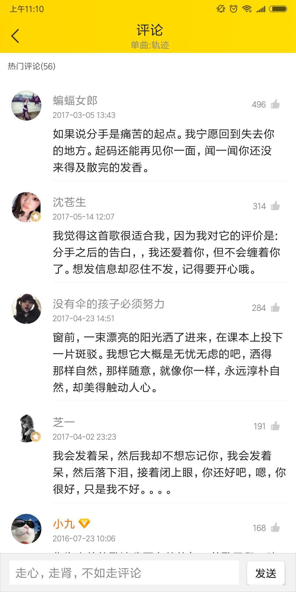

评论数据结构优化
i、为什么要改
目前的评论流程，存在几个主要问题：
1.对于我们的用户来说，创作评论难度较大；
然而，回复别人的评论，其实就无形降低了ugc的难度；
同时，对于热评，下面的大量回复又是一个用户可集中消费的场所；
而目前我们的评论信息组合，依然还是比较古老的一对一模式（跟老的网易一致）；显然是不能最好解决以上问题；而近期（2月份版本），评论最好的竞品“网易云音乐”也已经调整为我们曾经提过的下面这种
评论页中，各条评论的展示：

26条回复

全部回复


-单条评论的展示：
1、露出当前赞数最高的2条回复。回复的用户，只展示昵称，不展示头像
2、若回复数量≤2条，则不需要展示最底部的【共N条回复】
若回复数量≥3条，则展示最底部的【共N条回复】
3、点击上图中的A区域，弹出底部【回复/举报】弹框（与线上一致）
点击上图中的B区域，则跳转《评论回复页》（右图）
4、点击用户头像、昵称，则跳转用户个人主页
-回复页面的逻辑：
1.点击“主评论”，唤起键盘，回复该条评论
2.回复的排序规则：
3.点击“回复内容”，唤起键盘，回复该条回复。该内容不在评论主页展示，只展示在该 回复页
单条评论的回复页

A
B
ii、怎么改